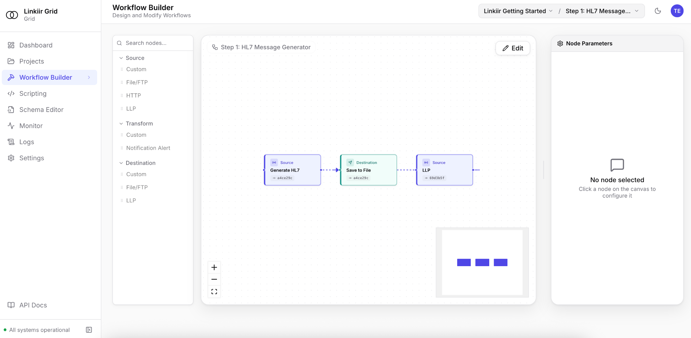

Receive and parse
Bring in HL7 messages or connect to healthcare APIs. Work with structured objects and schemas instead of manually splitting message strings.
HL7 & FHIR INTEGRATION
Bring legacy feeds and modern healthcare APIs into the same integration workflow. Parse, map, validate and route data with Grid, with or without AI.
Request access. Our team will follow up with setup details.

HOW GRID FITS
Bring in HL7 messages or connect to healthcare APIs. Work with structured objects and schemas instead of manually splitting message strings.
Define the destination structure, identifier rules and required fields. Test with representative samples before connecting live traffic.
Route through connected workflow nodes. Inspect message history, investigate failures and replay the messages that need another pass.
BEFORE YOU START
Yes. Grid supports HL7 v2 and FHIR R4/R5. Your workflow defines the field mappings, destination profile and API behavior; the exact implementation depends on your source and receiver.
No. Grid works without AI. If you enable the optional assistant, your organization selects its users, models and provider endpoints. Changes remain subject to approval controls.
Bring synthetic or de-identified examples, the source specification, destination requirements and expected output. These help establish whether the mapping handles your real requirements.
TRY YOUR WORKFLOW IN GRID